Plataforma predictiva Full-Stack: Automatización de IA y Dashboards
interactivos para hostelería.
Bienvenido a Cuisine AML
Este proyecto fue mi gran campo de pruebas para unir todo lo
aprendido: desde el desarrollo de interfaces modernas en React hasta
la ingeniería de datos en la nube. Mi objetivo no era solo predecir
ventas, sino crear una herramienta que un restaurador pudiera usar de
verdad en su día a día.
Fue un reto de humildad técnica. Aprendí que de nada sirve tener un
modelo de AutoML avanzado en la nube si no eres capaz de visualizar
esos resultados de forma clara. Conectar los pipelines automatizados
de Azure con un frontend dinámico me enseñó a gestionar el flujo
completo del dato, desde un ticket físico procesado por OCR hasta una
gráfica de tendencia en pantalla.
Cuisine AML es una solución integral que automatiza la ingesta de
datos y ofrece previsiones de demanda en tiempo real. Utiliza
servicios cognitivos para digitalizar información y modelos de
aprendizaje automático para predecir servicios y platos, presentando
todo en un panel de control intuitivo.
Funciones destacadas
Visualización Dinámica:
Dashboards interactivos en React para el seguimiento de
tendencias.
Digitalización OCR:
Extracción automática de datos mediante Azure Document
Intelligence.
Predicción AutoML:
Modelos de forecasting optimizados para prever demanda.
Arquitectura Desacoplada:
Backend ágil con FastAPI y documentación automática
Swagger.
Pipelines de IA:
Automatización total del entrenamiento y despliegue en
Azure.
Ecosistema Cloud:
Almacenamiento y gestión en Azure SQL Server y Storage.
Tecnologías Utilizadas
Frontend
React
Visualización de datos
Hooks & Componentes
API Consumption
Backend & API
Python
FastAPI
Swagger (OpenAPI)
REST API
IA & Automatización
Azure AutoML
OCR / Document Intelligence
Pipelines de ML
Feature Engineering
Datos & Cloud
Azure SQL Server
Azure Storage
Data Pipeline
Model Deployment
Características Técnicas del Sistema
Flujo de Datos End-to-End: Integración completa
desde captura (OCR) hasta visualización frontend, garantizando
integridad del dato.
Dashboards de Alta Performance: Interfaces
reactivas en React para filtrar y analizar predicciones con
fluidez.
Automatización con Pipelines: Flujos que
automatizan re-entrenamiento de modelos sin intervención manual.
Servicios Cognitivos Azure: Inteligencia
documental para eliminar carga manual, transformando procesos
analógicos en digitales.
Interoperabilidad: Comunicación eficiente FastAPI
+ React mediante API REST documentada, desarrollo ágil y
escalable.
Gestión Cloud Segura: Arquitectura de
persistencia en Azure optimizada para seguridad y disponibilidad
de datos.
Impacto en Negocio
Impacto Empresarial
Reduce roturas de stock y
sobreproducción
Mejora la planificación de
turnos y recursos
Aumenta margen al ajustar
compras a demanda real
Eleva la calidad de servicio
en horas punta
Stack Técnico
Python +
Pandas + Scikit-Learn
Feature Engineering para series temporales
Evaluación de modelos con MAE/RMSE
Visualización de predicciones operativas
Galería de Proyectos
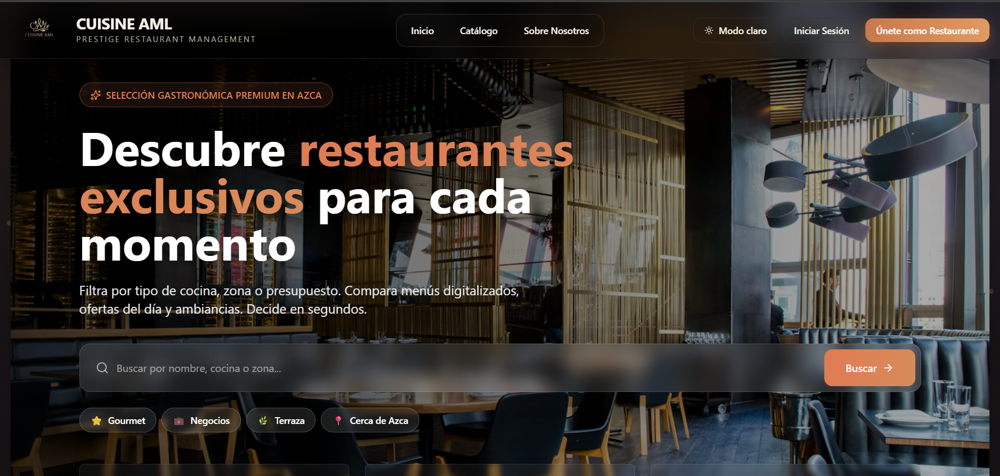
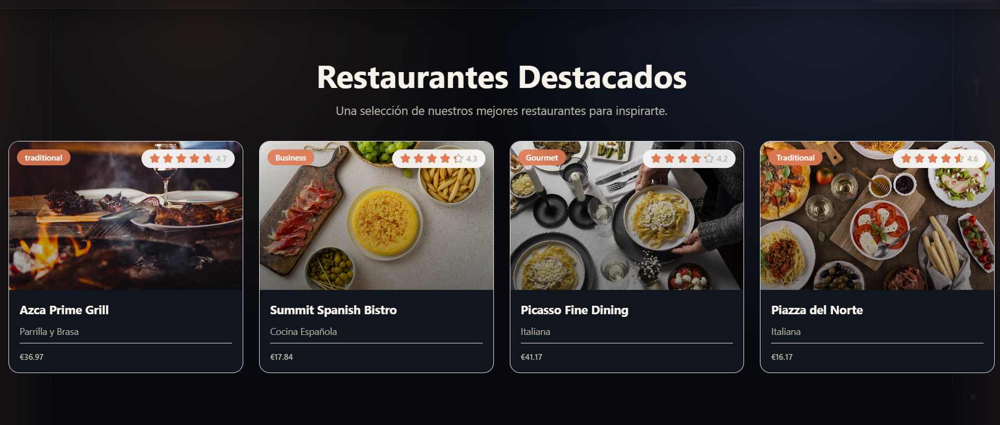
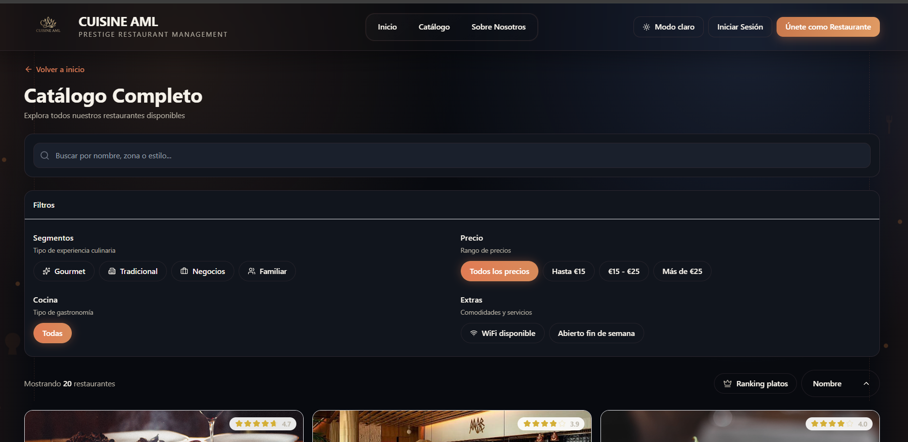
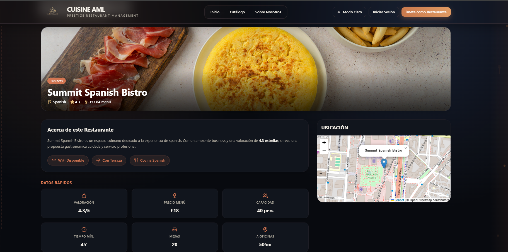
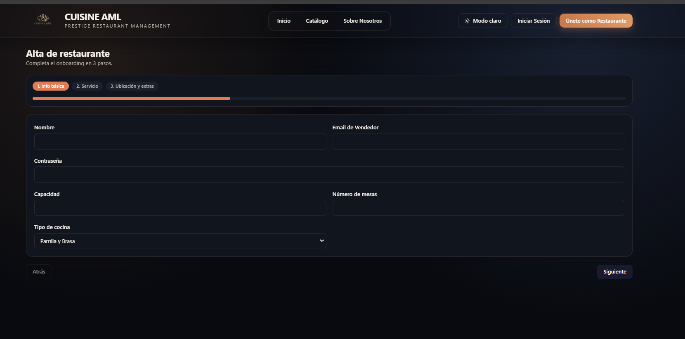
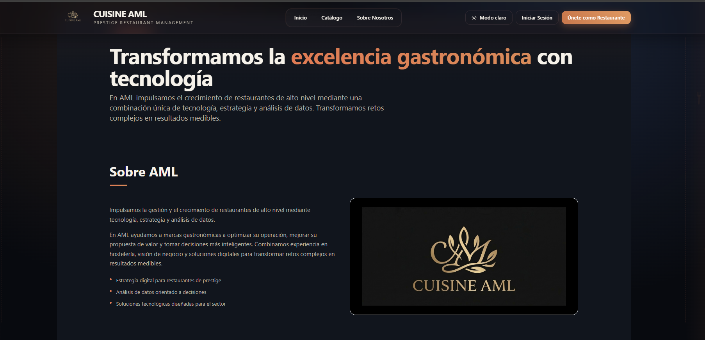
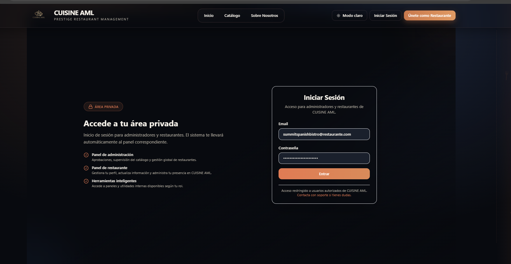
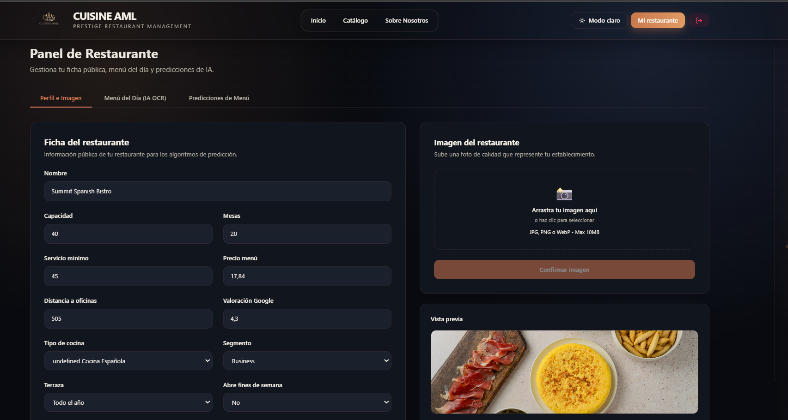
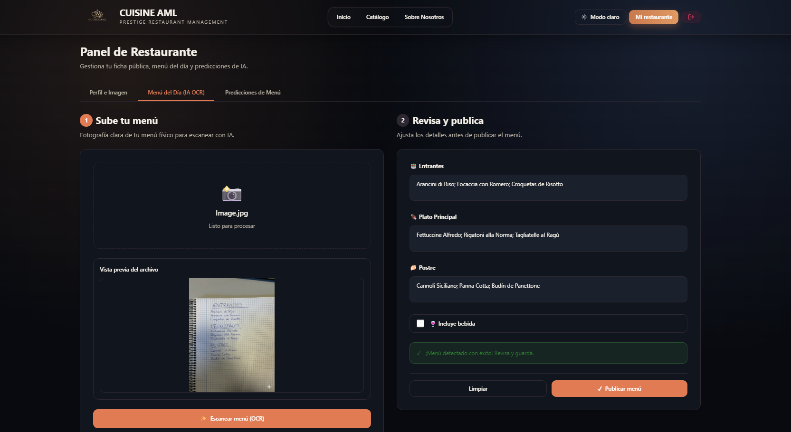
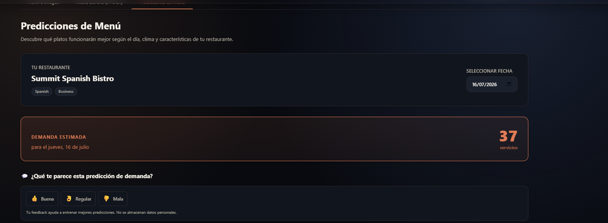
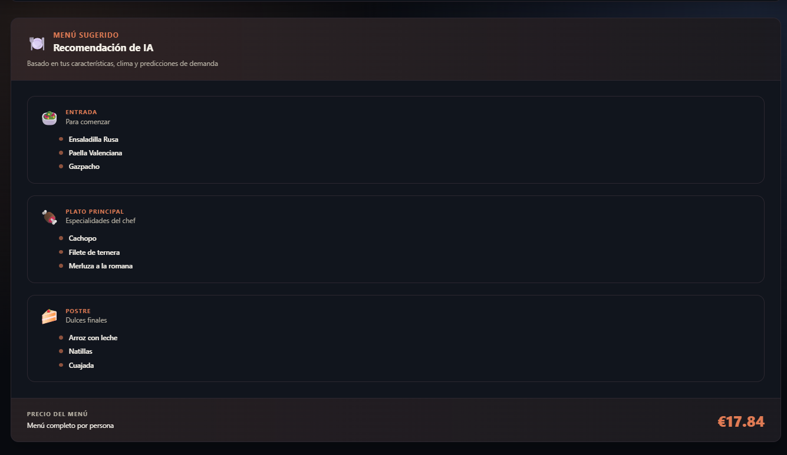
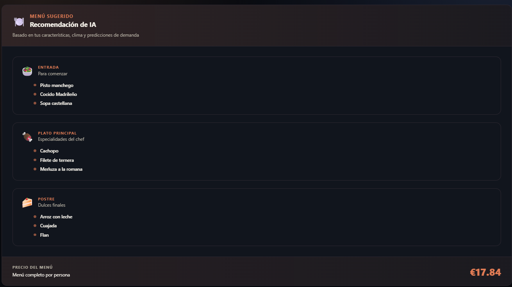
Haz clic en cualquier imagen para verla en detalle.